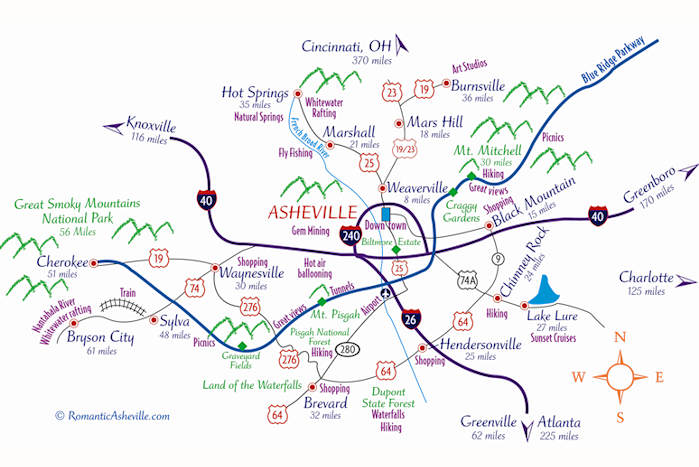
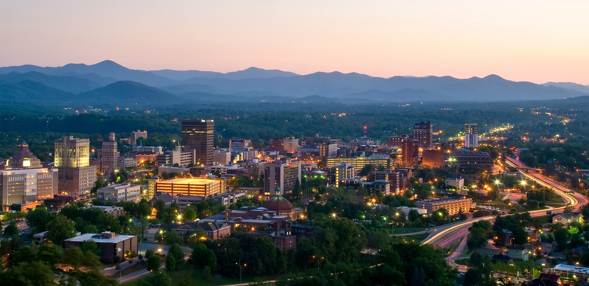

Asheville, NC
About Asheville
Asheville is a city in and the county seat of Buncombe County, North Carolina, United States. It is the most populous city in Western North Carolina, and the state's 11th-most-populous city located at the confluence of the French Broad and Swannanoa rivers.
Asheville Demography
- Population: 93.3k people
- Median Household Income:$58,193
- Median Age: 40.3 years Old
- Ethnic Group: White 81.5%, Black 10.9%,
Hispanic 5.9%, Asian 1.7%
Asheville Map

